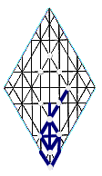

lba
אבל
Abel |
 |
indeed,
truly;
but, however;
to mourn, lament; to fade,
perish, wither, languish;
to be sorry, regretful;
a pasture, meadow, field, plain; river, stream. |
|
| |
Eriktology: perceptions/a formulate/b and guide/l; seeing/a and hearing/b provide
direction/l; expansiveness or contraction/a in response/b to instruction/l; an increase
or diminishment/a of consciouness/b that redirects/l; to attune/a the ear/b to the Teacher/l; concepts/a that are illusive/hidden/b discourage/l; the unruly/a habitat/b of a shepherd/l.
Gematria: 33/gl: instructional
processes.
Numerology: 15/hy: intentional
discernment.
Anagram: alb/withoutSee stream/lbwa.
Compare Abel/ lbh (son of Adam); mourn/dps; plain/huqb;
valley/auqb.
These entries are thirty years old or so.
Links are not integrated into modern site.
|
|